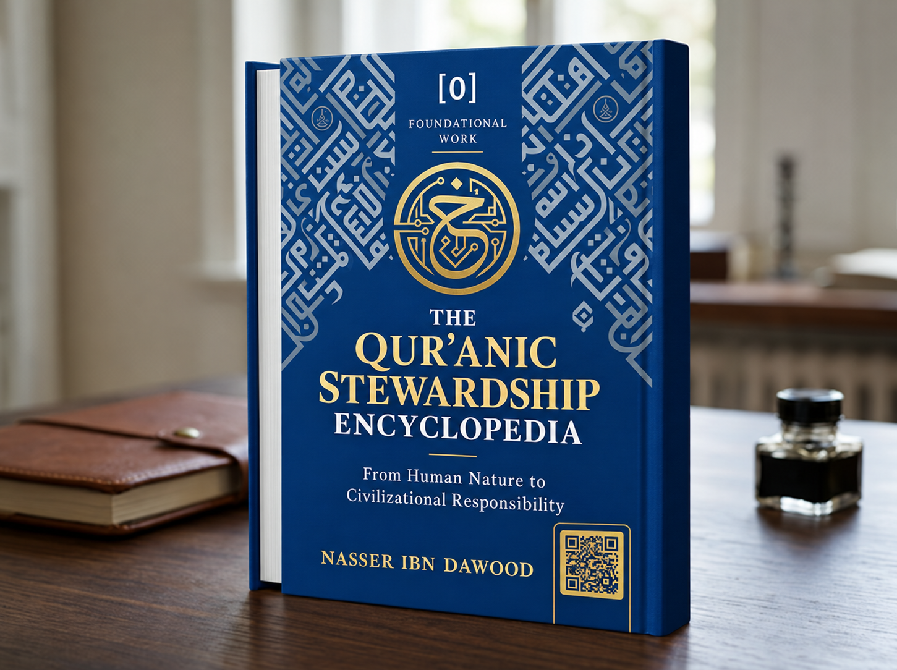

Nasser Ibn Dawood

Text extracted from the author-supplied Word edition; consult the original source.
Preparing the reader…
The Qur’anic Stewardship Encyclopedia: From Human Nature to Civilizational Responsibility
A Condensed Conceptual Adaptation of the Independent Foundational Work
Nasser Ibn Dawood
I. The Global Knowledge Manifesto
Knowledge is a universal right: The author firmly believes that wisdom should not be locked behind paywalls or language barriers.
Global Access Policy: All books in this library are available for free in multiple digital formats (PDF, DOCX, TXT).
The Digital Library: As of early 2026, the collection hosts 68 volumes (34 in Arabic and 34 in English), fully optimized for AI-assisted research and digital archiving.
Official Platforms: Main Website: https://nasserhabitat.github.io/nasser-books-v2/
GitHub: nasserhabitat/nasser-books
II. Translator’s Note: The Bridge of Meaning
This English edition is a condensed conceptual adaptation. It is not a word-for-word translation, but rather an “extraction of essence.” It presents the core philosophical framework in accessible English, omitting the exhaustive linguistic debates and classical references found in the original Arabic text.
For the academic researcher: The original Arabic version remains the primary source for comprehensive linguistic analysis, detailed exegesis (Tafsir), and the complete bibliography.
The Qur’anic Stewardship Encyclopedia: From Human Nature to Civilizational Responsibility
A Condensed Conceptual Adaptation of the Independent Foundational Work
This adaptation summarizes the conceptual argument for readers who do not read Arabic. It does not replace the Arabic original or claim to reproduce every linguistic argument, citation, or interpretive detail.
A fourth independent work and an overarching map
This work presents a broad map of human stewardship and can be read independently of the three thematic volumes. It asks how human beings move from recognizing truth and guidance to choosing a direction, developing awareness, and taking responsibility in the world. Its recurring image is a connected path rather than a collection of isolated virtues. The “encyclopedia” is an organizing synthesis by the author, not a claim that every element below is the only possible interpretation of the Qur’an.
Truth, guidance, and response
The work begins with a distinction between ultimate truth as the highest reference and guidance as direction for human understanding and action. It then considers response and sincerity: recognition alone is not enough unless it becomes a unified orientation. The author describes this transition as a movement from knowledge to commitment. These terms are explained through the author’s conceptual framework; the Qur’anic wording and the human analysis must remain distinguishable.
Balance, regularities, and calibration
Balance and the laws governing existence provide ways to evaluate action in reality. The “balance” is not reduced to an abstract metaphor: it is used to ask whether judgment and conduct correspond to truth, proportion, and consequence. The author connects this with recurring patterns (sunan) and with the need to calibrate human choices against the world as it is. Any specific mapping or equation is an analytical model and should be tested rather than treated as revelation.
Fitrah and the heart
The first thematic movement examines fitrah and the heart as dimensions of human receptivity and orientation. Fitrah is presented as an original human disposition toward recognition, while the heart is treated as a center of inward attention and choice. The author’s language of architecture helps describe how the person receives, weighs, and follows meanings. It should not be mistaken for a clinical or neurological claim.
Remembrance, trust, and inner steadiness
Remembrance and trust in God are considered practices that sustain awareness and action. Remembrance keeps a person attentive to the governing reference; trust supports action without pretending to control every outcome. The work then discusses guardianship or allegiance, divine companionship and support, and tranquility as related dimensions of a stable orientation. These concepts are linked by the author, but their exact meanings remain grounded in the passages and linguistic analysis of the Arabic original.
From the inner life to stewardship
The central journey does not end in private spirituality. A person whose direction and awareness are being formed is called to act responsibly within family, society, and civilization. Stewardship is framed as entrusted responsibility under moral limits, not unrestricted ownership or domination. The path therefore connects inward formation with public conduct and the effects of human choices.
Outcomes, accountability, and interpretive limits
The work closes the circle by considering how choices and actions lead toward outcomes. Its account of worldly and final consequences seeks to connect a person’s chosen direction with the destination of that direction, while preserving the unseen and afterlife dimensions of Qur’anic belief. The explanatory bridges between civilizational outcomes and final destiny are the author’s reflections, not substitutes for explicit Qur’anic statements.
How to use the map
Readers may use the encyclopedia as a conceptual guide to the larger project, then test each connection in its original context. The author’s appendices include diagrams, matrices, and exploratory readings; these are aids to thought, not definitive exegesis. A disciplined reader should ask which claims are direct textual statements, which are linguistic observations, which are inferences, and which are hypotheses or operational models. This method preserves the work’s ambition while keeping its conclusions open to evidence and revision.